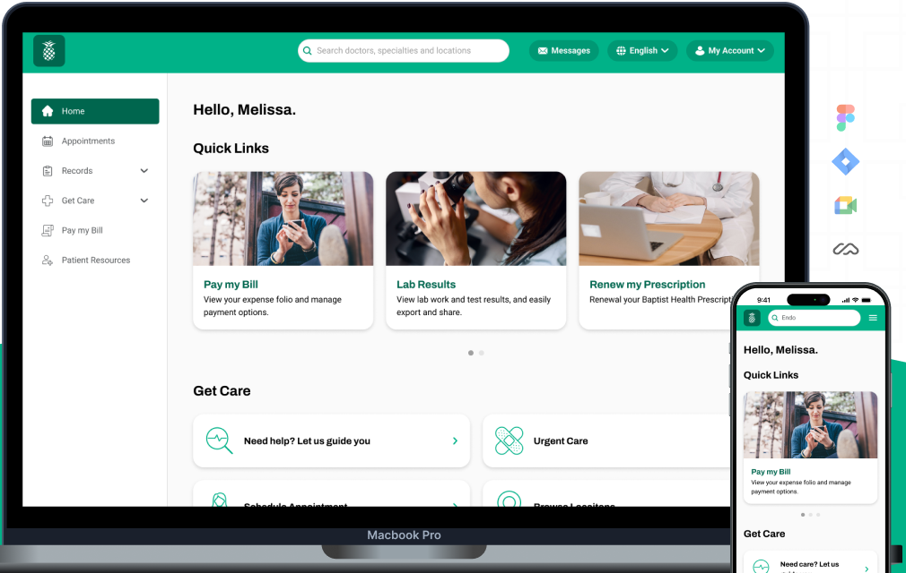
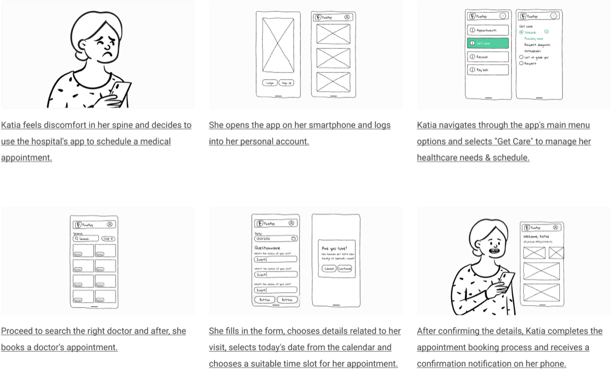

Design and implementation of improvements in the Design System and new business flows.
Year
2023
Timeline
1 year · 2-week sprints
Scope
Research, IA, scheduling, records, responsive
Tools
Figma, Maze, Hotjar
Categories
Health, B2B, B2C
00 / 06 · Summary
00 · Executive summary1 year · 2-week sprints
A new digital platform for Baptist Health (PineApp) across desktop, mobile, and TV, so patients can book care, see their records, and talk to their care team in one place.
3M+
Users impacted by the platform
400+
Screens, with tablet and mobile variations
+69%
Agility in medical service delivery
88%
Found the platform easy to use
Problem
Patients struggled to remember appointments, reach their records, and communicate with medical staff.
Approach
One year of two-week sprints in three phases: foundation, get care & scheduling, and records.
Outcome
A platform on iOS and Android that reduces admin errors, improves compliance with reminders, and speeds up care.
Roadmap · three phases over one yearFig. A
Months 1–4Months 5–8Months 9–1201 Foundation02 Get care03 Records
ToolsFigmaMazeHotjarDesktop · mobile · TV
Step 01 / 05Month 1
01
Research
GoalUnderstand doctors, patients, and administrative staff before defining the MVP.
What we did
Interviews and focus groups with 45+ patients, 10 medical specialists, and 25 admin staff.
Analyzed medical workflows so the platform aligns with real healthcare practices.
Defined personas from a database of 30,000+ evaluated records.
Defined the MVP: scheduling, medical record access, and basic communication.
Key challengeGetting clarity on patients' needs was hard: many were reluctant or resistant to open communication.
Issues to solveFig. B
Final target · 3 personas
ML
Maria Lopez, 41Working professional
Pain
A busy schedule; forgets appointments; limited access to records.
Solve
Scheduling and notifications from a mobile app.
JM
John Martinez, 32Full-time worker
Pain
No detailed history or vaccination records; communication barriers.
Solve
Instant access to history, vaccinations, and preventive notes.
SR
Susan Roberts, 35Full-time caregiver
Pain
Managing her child's appointments, vaccinations, and records.
Solve
Seamless scheduling and reminders for her child's care.
I need a platform that allows easy access to my medical history to coordinate ongoing treatments and monitor my chronic conditions.
Thomas Boston · Chronic patient
To enhance pediatric care, it's essential to have detailed records of vaccinations and child development easily and securely accessible.
Abigail Jhonson · Pediatrician
Step 02 / 05Phase 1 · 4 months
02
Foundation
GoalBuild the base everything else depends on: navigation, access, profile, and brand.
NAV
Menu sections
Appointments, records, reminders, and more.
PRE
Pre-registration
Profile ready before the first visit.
AUTH
Login & access
Secure entry and credential management.
SETUP
Set-ups
Language, notifications, accessibility, data.
PROFILE
Profile
Personal info, insurance cards, records.
Information architecture · initial stageFig. C
Login / sign up→Pre-register→Home
NavbarAppointmentsRecordsGet carePay my billPatient resources
AccountUpcoming appointmentsQuick linksScreenings
Profile dataConsent documentsBasic info · insuranceQuestionnairesCoordination of benefits
Brand#00664E · #00B288 · #154152Roboto · icon set

Home · desktop + mobileFig. D
OutputsIAStyle guideInitial prototype
Step 03 / 05Phase 2 · 4 months
03
Get care & schedule
GoalAfter presenting the prototype to executives, build the two essential flows: getting care and scheduling.
What we did
Card sorting, online and in hospital units, to group care features under Get care vs. Schedule.
Storyboard of Katia, who books an appointment for back pain from her phone.
Added pre-visit, donations, and DAISY awards for outstanding nurses.
Usability studies on navigation, clarity of required info, and booking.
Key decisionA guided entry, “Need care? Let us guide you”, for patients who don't know which specialist they need.
Iteration resultsFig. E
BOOKING
+30%
Success rate after the 3rd iteration.
PRE-VISIT
75%
Registered pre-visits proactively.
MAMMOGRAPHY
+25%
Bookings after the 4th iteration.
GUIDANCE
90%
Satisfied with “Let us guide you”.

Storyboard · Katia books an appointmentFig. F
Step 04 / 05Phase 3 · 4 months
04
Records
GoalEnrich the platform with record management, using medical terms both patients and doctors understand.
What we did
Defined 10 record sections with executives, refined with a short user survey.
Every flow includes empty states, add / search / filter, configuration, and PDF outputs.
Refined the IA into 7 main sections, with Records and Get care as the deepest.